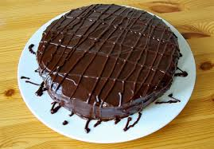

-
Торт без выпечки, на сковороде, быстрый и вкусный!Этот кулинарный рецепт очень понравится тем, что ищет торт попроще – чтобы быстро готовился и не требовал от нас много сил, умений и дополнительных пр...
-

Воздушный десерт вознесет Вас на седьмое небо!Вот так я приготовила очень вкусный классический тирамису в домашних условиях.Тирамису - удивительно нежный и вкусный десерт.
-
Всем любителям шоколадных бисквитов посвящается!Торт Пьяная вишня – отличное сочетание шоколадного вкуса с вишневым. Торт не оставит вас равнодушными, приготовить просто.
-
Знаменитый торт - вкуснейший, очень необычный по виду - пробуйте!Хороший рецептик:вроде бы простые ингредиенты, а получается такая вкуснота! И выглядит тортик так необычно! В общем,идеально!!!
-

Знаменитый пражский торт любим всеми- так много шоколада и сгущенки!Пражский торт, как один из наиболее любимых в народе, существует в нескольких вариациях.
-
Безумно вкусный тортик обязательно удивит гостей и семью!Простой рецепт - торт Летний с суфле.
-
Чудесный десерт! Вкусный, нежный, просто тает во рту!Вкусно.Очень вкусный, нежный и сочный пляцок.